2019 年 10 月 27 日，又拍云联合 Apache APISIX 社区举办 API 网关与高性能服务最佳实践丨Open Talk 杭州站活动，来自阿里巴巴的技术专家王发康做了题为《阿里七层流量入口负载均衡算法演变之路》的分享。本次活动，邀请了来自阿里巴巴、蚂蚁金服、Apache APISIX、PolarisTech、又拍云等企业的技术专家，分享网关和高性能服务的实战经验。
王发康，阿里巴巴 Tengine 开源项目 maintainer，负责阿里集团 WEB 统一接入层的开发及维护。
以下是分享全文：
大家下午好，我叫王发康，来自阿里巴巴 Tengine 团队，目前主要负责阿里七层流量入口的开发与维护。今天演讲的主题是《阿里七层流量入口负载均衡算法演变之路》，主要从四个方面介绍：
统一接入架构介绍
负载均衡改造背景
VNSWRR 演进过程
效果及总结
从 2011 年至今，Tengine 在开源的道路上已走过第八个年头，感谢社区贡献者及广大用户的支持。下面先介绍下 Tengine 与 Nginx 的区别：
大家都知道 Nginx 的性能非常高，C1000K 都不成问题；同时，Nginx 的生态也比较丰富，不仅可以作为 HTTP 服务器，也可以作为 TCP 和 UDP，功能强大；它还可以和 K8s、Mesh、Serverless等其他生态打通，也包括 Lua、Js 语言支持；Nginx 模块化做的很好，支持动态加载，可以很方便的将自己写模块扩展进去。
Tengine 是 100% 基于 Nginx 开发的，也就是说 Nginx 有的，Tengine 都有，Nginx 没有的，Tengine 也可以有。兼容并包是 Tengine 研发的重要思路， 除了 100% 继承 Nginx，也结合阿里大规模场景应用开发了众多高级特性：比如秉承软硬件结合的优化思想，通过 QAT 硬件卸载 HTTPS、Gzip；使用 AliUstack 用户态协议栈绕过内核、避免软中断、减少数据拷贝等操作来提高性能，另外包括一些动态服务发现 、后端的 RPC 通信如 Dubbo 协议的实现。同时，我们还有大规模的流量验证场景，即每年双十一的洪峰流量，使得其稳定性等方面得到充分验证。
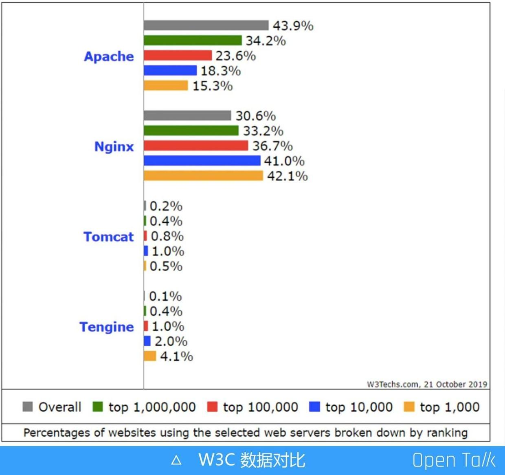
根据 W3C 数据显示，目前 Tengine 和 Nginx 在 Top 1000 到 4000大型网站中使用占比已接近 50%，这得益于其在高性能、稳定、易用性、功能强大等方面都做的比较极致。
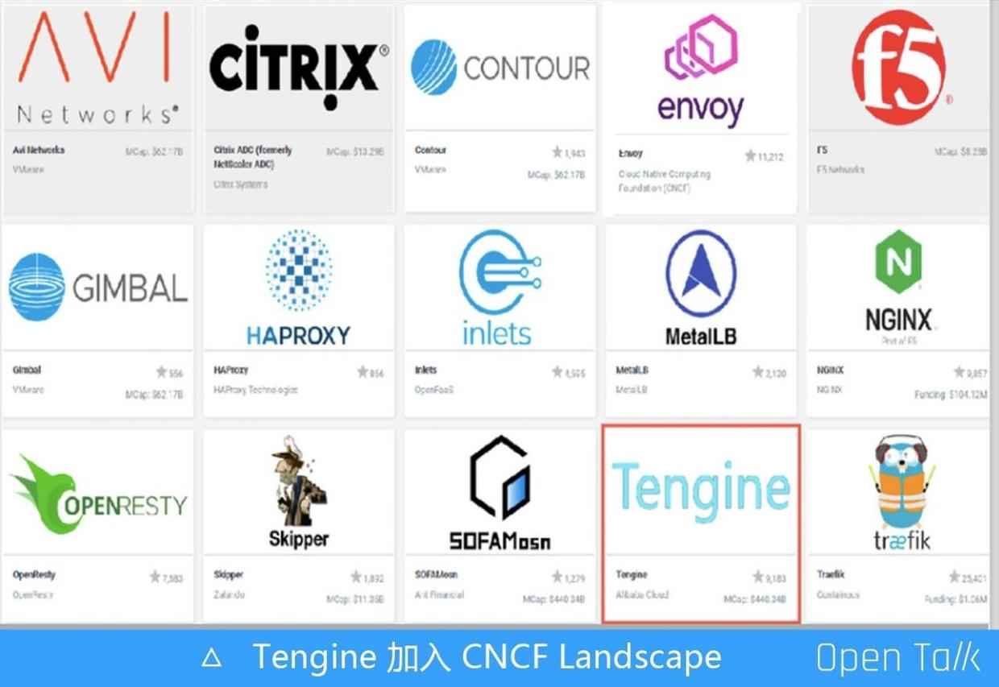
统一接入层
Tengine 作为阿里集团七层流量入口核心系统，支撑着阿里巴巴历年双 11 等大促活动平稳度过。基于 Tengine，阿里研发了新的产品——统一接入层。
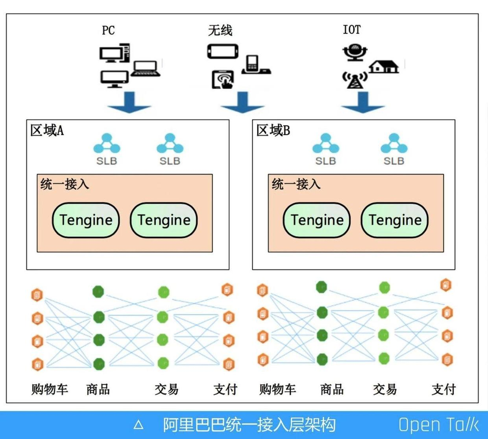
统一接入层，指的是设置专属一层，统一接入所有流量，包括 PC 流量、无线流量、IoT 流量。从入口进来，经过四层的 SLB，直接到达七层的 Tengine 组成一个集群，通过它进行 HTTPS 的卸载、链路追踪、单元化、灰度分流，以及一些安全清洗等。
如果没有统一接入层，之前的业务方，例如购物车、商品等都要自己维护一个网关，这就涉及到维护成本和机器成本，例如卸载 HTTPS，如果所有业务方都要申请证书，那造成的应用成本是非常高的。可如果将所有功能全放在这一层进行，好处非常明显：一方面是机器集中管理节省成本；另外一方面，如果遇到新的瓶颈可以在统一接入层集中优化，如请求响应 Body 统一在这一层进行压缩减少带宽消耗，压缩会消耗 CPU，可以在这一层通过硬件加速的方式集中优化等。
Nginx SWRR 算法
前面提到，请求流量进来后需要通过负载均衡的算法进行调度，均匀地分配到后端。负载均衡算法非常多，例如一致性哈希，IP 哈希、Session、Cookie 等各种算法，今天主要讲的是 WRR 算法，即加强轮询算法。
WRR 算法是 Nginx 官方的，我们日常用的 Upstream 中，如果不配置算法，那么默认的就是 SWRR 算法。最早的 Nginx 官方其实是 WRR 算法，后来经过改造演变成 SWRR 算法，“S” 即 Smooth，是平滑的意思。
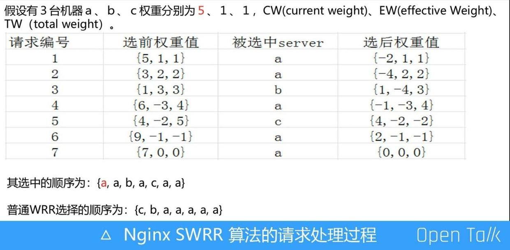
如上图，我们简单看下 Nginx SWRR 算法的请求处理过程。假设有三台机器 a、b、c，权重分别是 5、1、1。请求编号指的是第一个请求、第二个请求、第三个请求。第一个请求 Nginx SWRR 算法会选择权重最大的 a 机器。选中 a 机器后，就会对其进行降权处理，这样可以降低下一次被选中的概率。而 b、c 两台机器本次没被选中，下一次就要提高它的权重。 降权过程为：a 机器被选中后，当前的权重减去总权重，即 5 减 7 得负 2；下一轮选择开始时，还需要加上上一轮机器本身的权重 5，负 2 加 5 就是 3，1 加 1 变成 2，由此原本权重 5、1、1 的 a、b、c 三台机器本轮权重分别是 3、2、2。
第二个请求进来时，依然选择权重最大的机器，还是 a。接下去的流程不必细说，算法流程是一样的，整体过程均按照被选中机器需要减去总权重的规则，为了降低其下次被选择的概率。全部请求走完，被选中的机器顺序就是 a、a、b、c、b、a、c、a、a。
WRR 算法实现有非常多种，最常见的就是随机数算法。普通 WRR 选择的顺序就是 c、b、a、a、a、a、a。这就产生了一个问题：当请求流量进来时会一直选择权重高的机器，可能导致流量不均衡，流量大部分分散在权重比较高的机器。而 Nginx SWRR 的算法特点就是平滑、分散，相当于把 a 间隔打散在列表中。
流量调度
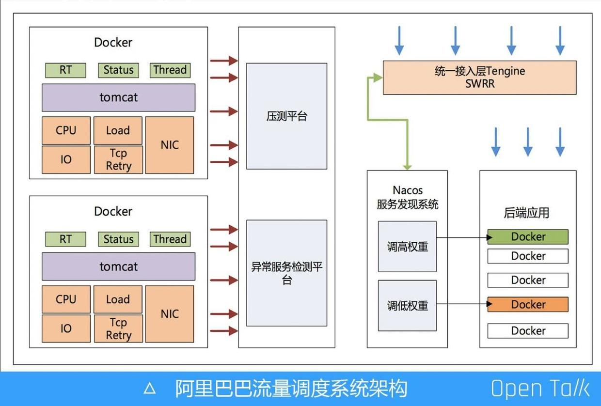
压测平台
请求流量进来后，在接入层按照权重做负载均衡算法，如此一来在接入层又孵化了一个新产品——流量调度，主要的应用场景是压测平台。
一般新版本发布后都需要用线上真实流量进行压测，通过压测平台调整后端某几台机器的权重，把需要进行压测的机器权重调高，接入层可以动态感知到机器权重被调高，使得更多的线上流量被引向那些机器，以此达到线上压测的效果。
异常检测平台
我们还有个异常检测平台，通过实时监测各应用机器以及服务状态，按照一定的算法降低异常机器的权重，从而规避一些异常问题。我们会检测后端的每台机器，主要考量三个层面：
硬件层面；
系统资源状态；
应用层面上的 RT、状态码、线程数各种状态。
如果某一台机器负载比较高，检测平台通过服务发现后会降低权重，接入层动态感知到后能降低该台机器的流量。这种做法的好处在于如果线上有异常机器，无需人工介入，可以直接智能化感知并自动摘除。
需要注意的是在一些特殊的场景里，异常检测平台也会出现问题，例如很多台机器都出现了故障，系统把这些机器权重全部降低，假设 100 台机器降低了 50 台，可能会引起系统雪崩。因此这部分也需要把控，设置在一定的范围内允许调整机器权重的数量。
接入层 VNSWRR 算法改造背景
调低权重，机器的流量会减少，但如果调高权重呢？大家都知道 Nginx 是多进程、单线程模式，例如 CPU 是 32 核，它就会起 32 个worker，每一个 worker 都是独立的 SWRR 算法。
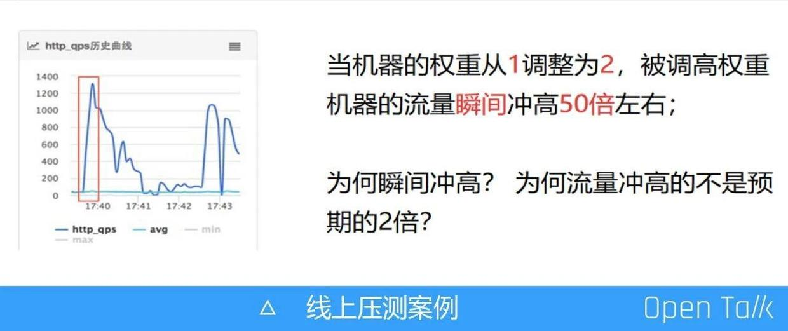
如上图所示，是采用原生的 Nginx 官方算法进行线上压测的真实案例，压测平台把某台机器的权重从 1 调整为 2，机器流量瞬间冲高 50 倍，基本上单个集群的流量全部引向该台机器了，这是原生的 Nginx 官方算法。而在接入层中，后端机器权重是动态感知的，实时性非常高，所以会出现上图中的问题。
这里有一点值得注意：权重从 1 调到 2，为什么冲高的流量不是预期的 2 倍，而是冲高了 50 倍？如果想解决这个问题，我们一般会从运维的角度或者开发的角度出发，不过既然已经有监控数据，就先不看代码，直接从运维的角度分析数据监控图，以下是调高权重后对应机器的 QPS 变化特征：
QPS 持续上涨峰值是 1300 左右;
QPS 持续上升 7s 左右后开始下降，随后稳定在平均值的 2 倍左右;
权重被调高机器在 A 机房，接入层 Tengine 是优先同机房转发、其 CPU 是 32 核;
当时该应用 A 机房的 QPS 是 K 左右，接入层 A 机房 N 台；可以算出(N * 32 / K) * 1 / 2 约等于 7.68s
第 4 点中的 K 是应用的 QPS，可以看成速度，即每秒能进来多少量，而用接入层的总 worker 数（Nginx 是多进程，单线程模式，32 核的 CPU 就是 32 个 Worker）除以速度（K），取一个中间时间，算出来大概是 7.68 秒左右，和 7 秒基本上是接近的。
接入层 VNSWRR 算法（V1）
Nginx SWRR 算法有一个缺陷：第一个请求进来时，必然选择权重高的机器。这是因为接入层是无状态的，每台机器 worker 的算法都是独立的，请求分到任意一台机器的 worker 上，初始状态都是选择权重最高的。找到原因后就需要解决这个问题，那有什么办法可以不让它选择权重最高的呢？方法很简单，我们当初只用四五行代码就解决了这个问题。
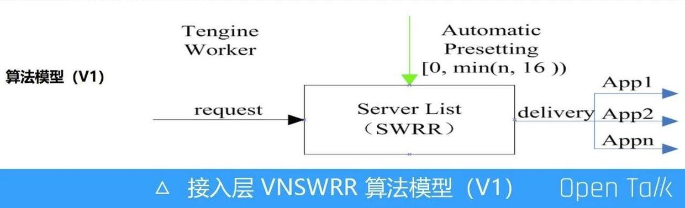
我们抽象一个算法模型，让它预调整机器权重，调整的范围是多少？如左闭右开一个区间 [0，min(N，16）)，N 代表应用的机器数，从 1 到 16 去取一个最小值。这意味着最多可以预丢 16 次，最少可以不丢。“不丢”指的是请求来了直接送到后端权重被调高的机器。改造完后，看一下效果如何。
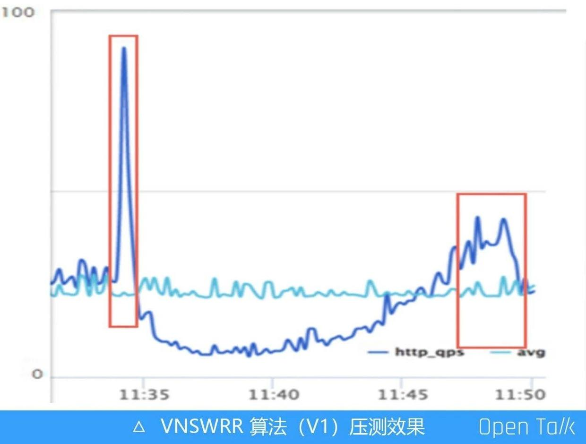
同样的场景，我们把机器权重从 1 调整为 2，流量瞬间冲高了 3 倍。这里又出现了一样的问题，在改造前，流量是冲高了 50 倍，现在只冲高了 3 倍，所以问题还是没有解决，只是缓和了。同时出现了一个新的问题，机器权重调到 2后，按照最原始的算法，其流量基本上 7 秒过后就能恢复到预期的 2 倍，但是现在需要 15 分钟才能恢复到预期的 2 倍，这肯定是不能容忍的。
任何一个问题背后都是因为代码的改动或者逻辑设计的不合理导致的。先思考流量瞬间冲高 3 倍是怎么来的，这和前文提到的“丢”有关。“丢”指的是第一个请求进来时，并不直接把它送到后端，而是先伪造一次，动态调整权重，调整过后在把请求转发到后端。这个请求就相当于后面会重新触发 SWRR 算法，如此一来可以避免第一个请求都被选中到权重调高的机器上。
再看设置的区间 [0，min(N，16))，线上应用机器肯定超过 16 台，而区间范围是 0 到 16。0 代表请求来了直接送到后端，这就有 1/16 的概率是不丢的，意味着有 1/16 的概率会遇到 Nginx SWRR 算法本身缺陷造成的的问题。开始冲高 50 倍，1/16 基本上就是 3 倍，这是概率问题。
那为什么持续了 15 分钟才达到预期的 2 倍呢？这是因为 1/16 的概率不丢，还有其它的可能丢 1 次，丢 2 次，丢 3 次……丢 15 次。但一个机器被选中后，它的权重会减去当前所有机器的权重总和，这样做的目标是为了降低下次被选中的概率。所以当请求再次进来时选择权重被调高的那台机器概率也很低。根据此前的算法可以算出需要持续 15 分钟才能恢复。
接入层 VNSWRR 算法（V2）
基于前文流量冲高 3 倍及持续时间较长的问题，我们又进一步演进算法，通过引入虚拟节点的新思路解决问题。
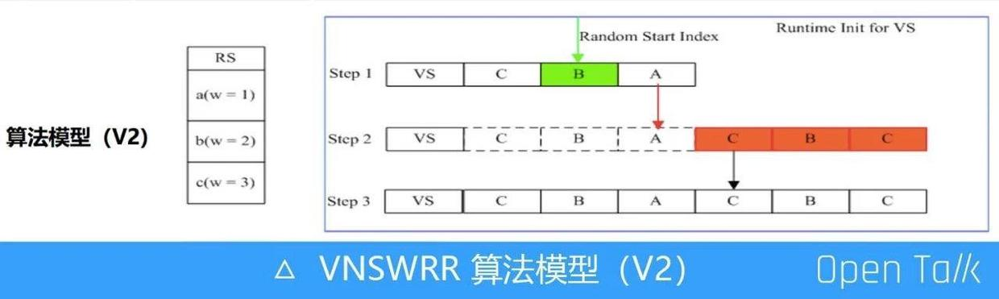
假设有三台机器 A、B、C，权重分别是 1、2、3。需要考虑两个问题：
虚拟节点的机器怎么填充？是填 CBA、ABC 还是 CBC 呢？
虚拟节点如何初始化。例如有一个节点机器权重是 10000，其它机器节点权重都是 1 。三台机器权重分配是 1、1、10000，相当于引出 10002 个虚拟节点。如果一次性初始化，等同于做密集型计算，如果在初始化列表做 for 循环 10000 多次或者几万次的话，那在双十一零点高峰时肯定就直接挂了。
解决上述两个问题有两个关键点：第一个关键点是机器列表如何初始化，如何打散机器，不让权重高的机器集中在一起。另一个关键点是如何初始化虚拟列表，一次性初始化会发生 CPU 做密集型计算的问题。基于这些，我们引入一种新思路——初始化虚拟节点列表的顺序完全和 SWRR 的选取一致，严格按照数学模型的算法初始化。另外，庞大的虚拟节点列表如果按照 Nginx 官网的权重初始化算法，是非常消耗 CPU 的，所以我们决定在运行时分批初始化。
举个例子，一个应用有 3 台机器，权重分配是 1、2、3，那么它共有 6 个的虚拟节点，而真实节点只有 3 个。则第一批先初始化3个虚拟节点（即真实机器数），当第一批虚拟节点轮训使用完后则进行初始化下一批虚拟节点，同时虚拟列表中机器节点的顺序严格按照 SWRR 算法顺序填充进去。
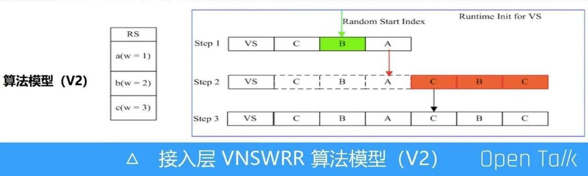
如上图，当第一个请求进来时，就从虚拟机器列表中的一个随机位置开始轮询。如 Step 1，抽一个随机数，有可能是从 C 开始去轮询，也有可能从 B 开始轮询。通过这种方式使得 Tengine 的每个 worker 以及每台机器的 Tengine 都可以被打散，有的机器从 C 开始，有的机器从 B 开始。这样就可以避免所有流量都选择权重最大的那台机器，通过随机数打散流量被分配到各台机器。而当运行时轮询到 A 机器后，则需初始化第二批虚拟节点列表（如 Step2中橙色部分），当虚拟节点全部填充好后（如 Step3 中状态），后续不在做初始化，直接轮训列表就好。
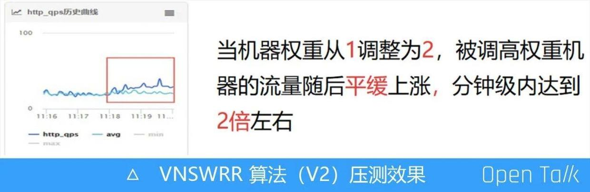
演进后的接入层 VNSWRR 算法上线后效果非常明显，如上图所示，机器权重从 1 调整为 2 时，流量基本上是平稳地上升到 2 倍左右。
接入层 VNSWRR 算法演进效果对比
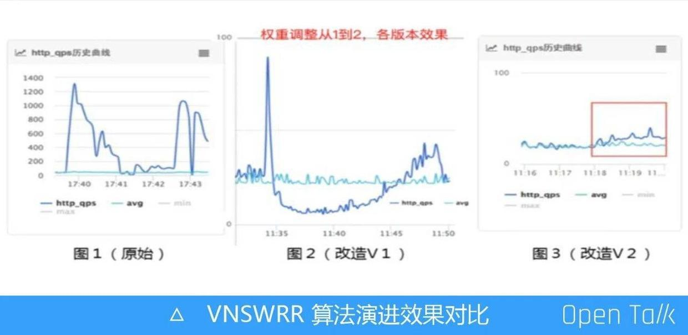
图1 是 Nginx 原生的 SWRR 算法，图 2 是改造 V1 版本的效果。图 3 是终版改造的算法，从这个版本开始，我们引入虚拟节点，使得流量在分钟级别内平稳的达到 2 倍。这不仅解决了 Nginx 加权轮询算法在权重调高时流量全部集中在一台机器上的问题，并且在引用虚拟节点过后，我们的算法时间复杂度基本上变成 O(1)，而 Nginx 官方的算法现在目前还是 O(n)。
之前我们有发过一篇文章，在纯压测负载均衡算法的场景下，改造过后的终版算法相较于SWRR 算法有 60% 的性能提升。
刚开始遇到问题时，既想把问题解决掉，又想把性能优化到极致。但事实上还是在解决问题的过程中逐步演进到最优状态。
譬如看到权重调高后机器的 QPS 变化趋势图，每一个特殊峰值点以及变化趋势会给挖掘问题的本质带来很大的帮助。
简单并不代表 low，代码入侵越小，出问题就越少，同时也容易发现。
我们做任何一个方案，大到一个系统的设计，小到每一行代码，都需要考虑到小程序、大流量场景。如果程序员能做到这一步，相信一定会有很大的成长。